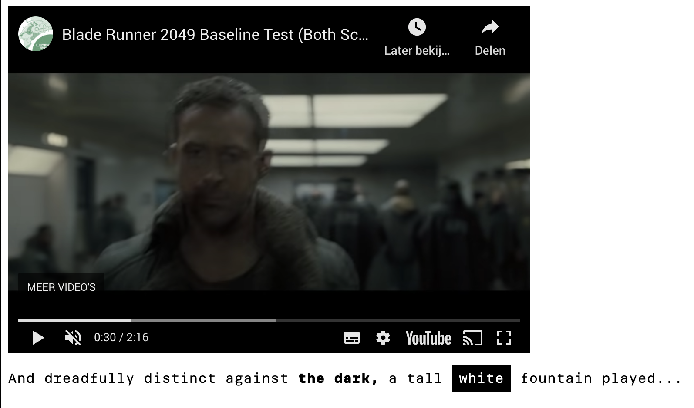
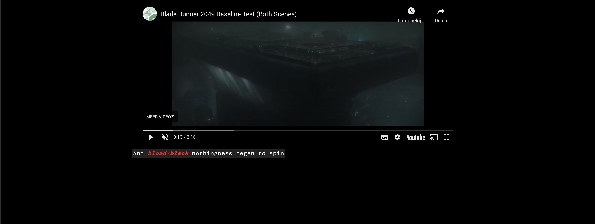
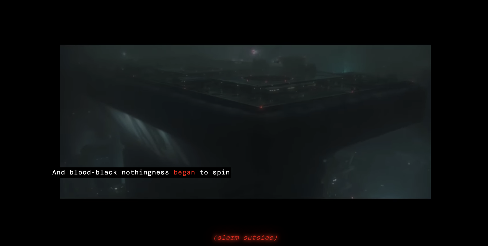
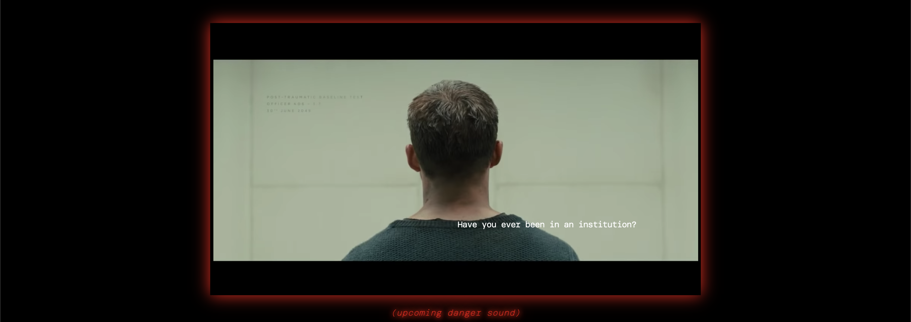

Web Typografie
Hoe kijken mensen die doof zijn naar een film? Is dat wel spannend genoeg zonder geluid? Dit vak gaat om een fragment van de film "The Blade Runner 2050" te coderen voor Marie(gebruiker) om dit zo spannend mogelijk te maken.
Week 01 - Zelf experimenteren
Ik de eerste week was ik zelf veel gaan experimenteren met coderen van de typografie. Hoe je die zo spannend mogelijk naar voren kon krijgen.
Week 02 - Feedback
Na de eerste feedback-moment werd er duidelijk dat ook de omgeving van het fragment een sfeer kan geven. Zoals hieronder heb ik de achtergrond kleur volledig zwart gemaakt om de sfeer te krijgen.
  Week 03 - Resultaat
Na de tweede week was er nog één feedback-moment en daarbij werd gezegt om verder 'out of the box' te gaan en experimenteren met het beeld.